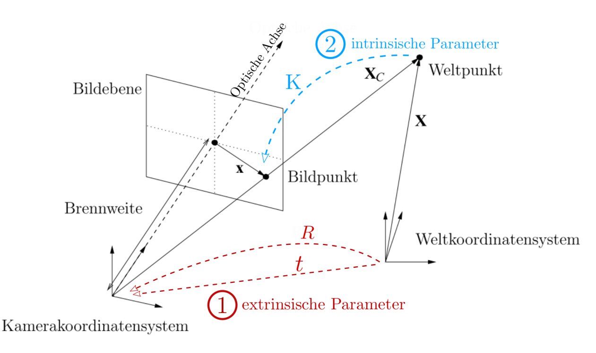
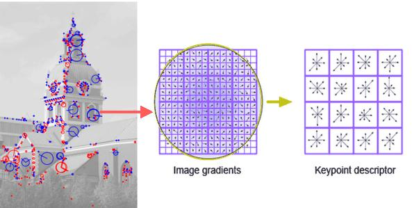
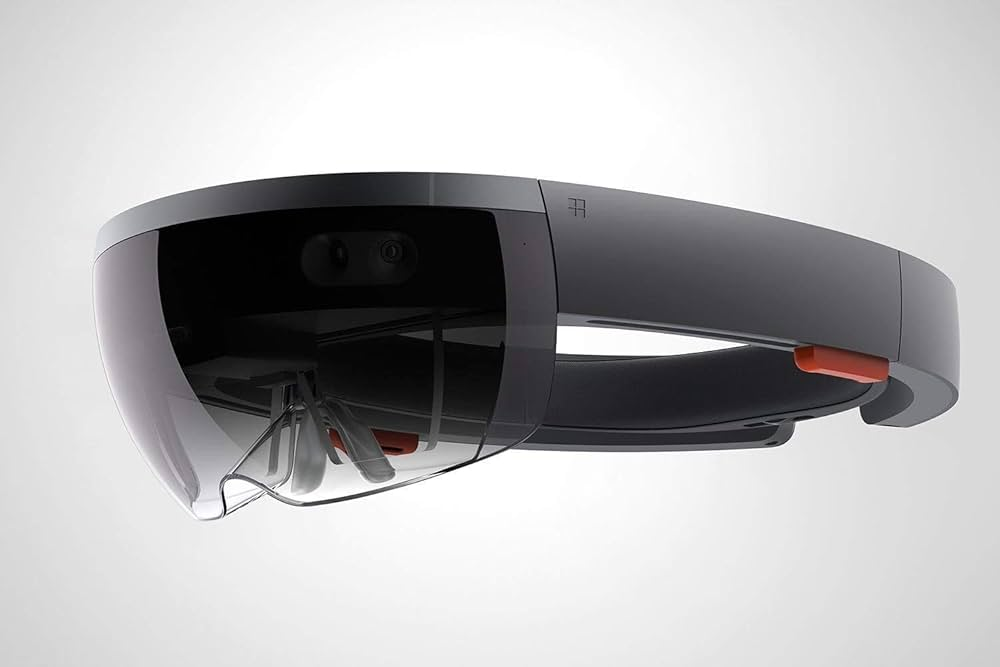

Ziel:
relative Position von Objekten zur Kamera
(extrinsische Parameter) bestimmen
Kernentscheidungen:
üèòÔ∏è Inside-Out oder Outside-In?
üìç Marker oder keine Marker?
Inside-Out
/
Outside-In

Inside-Out
- Kameras an Personen
- schwer
- schränken Bewegung ein
Outside-In
- Kameras im Raum
- Freie Bewegung
- üí∏ viele Kameras ben√∂tigt
Markenbasierte Verfahren
- üìç klar definierte Marker
- üìç Schwellwertfilter
- üìç aktive / passive Marken


Schwarzweißmarken
- üìç passive Marken
- üìç vordefinierte Muster + Gr√∂√üe
- üìç Positionsbestimmung durch Gr√∂√üe + Aufnahmewinkel


Intrinsische und Extrinsische Kameraparameter

- Berechnung der Pose der Marke im Verhältnis zur Kamera
- Intrinsische Kameraparameter:
- Entstehen mithilfe von Kamerakalibrierung
- Mit Intrinsischen Kameraparameter entsteht Kalibrierungsmatrix
- Extrinsische Kameraparameter:
- Rotationsmatrix und Translationsvektor
- Entstehen mithilfe von Kalibrierungsmatrix, Abstand zwischen Eckpunkte und Orientierung der Marke
Merkmalbasierte Tracking-Verfahren

- Geometriebasiertes Tracking:
- Aus Kamerabild werden Merkmale extrahiert (Kanten und/oder Eckpunkte)
- Vorangegangene Bilder werden aus vorherigen erreichneten Transformation erstellt
- Weitere merkmalbasierte Tracking-Verfahren:
- Visuelle Merkmale (Features) mithilfe von Merkmalsdetektoren erkennen
- Vergleich mit 2D- oder 3D-Geometrie
- Ausreißer mithilfe von RANSAC-Verfahren aussortiert
- Merkmalsdetekoren:
- SIFT (Scale Invariant Feature Transform)
- SURF (Speeded Up Robust Features)
Visual SLAM-Verfahren
- Hauptsächlich Kameras verwendet
- Tiefeninformation von 3D Kameras genutzt (Kinect, Intel RealSense)
- Anfangs alles Unbekannt
- Karte wird erzeugt und mit Bewegung der Kamera verbessert
- Dynamische Objekte müssen herausgefiltert werden
Hybride Tracking-Techniken
- Kombinierte und unterschiedliche Tracking-Verfahren werden verwendet
- Markenbasiertes Verfahren nur dann gut wenn Marken im Sichtfeld sind
- Lagesensoren von Smartphone/Tablets verwendet
- Kalman-Filter
Tracking der Microsoft Hololens

- Verwendet SLAM-Ansatz
- Vier Kameras (30 HZ) in Kombination mit einer IMU (1000 HZ)
- Hochauflösende Frontkamera
- Tiefenkamera (Gestensteuerung)
- Graph zur Lageschätzung (kein globales Koordinatensystem)